Sección 4 Biplot y Bibiplot
El biplot es una visualización conjunta de:
scores (puntos = observaciones)
loadings (flechas = variables)
Esto permite ver simultáneamente:
cómo se distribuyen las observaciones en el espacio PCA,
qué variables explican esa distribución.
Interpretación esencial del biplot
Flechas largas: variables con mayor contribución.
Flechas cercanas: variables correlacionadas.
Observaciones proyectadas en dirección de una flecha: altas en esa variable.
Ángulos entre flechas:
\(< 90\)°: correlación positiva
\(\sim 90\)°: independencia
\(> 90\)°: correlación negativa
En R base se puede obtener de la siguiente forma:
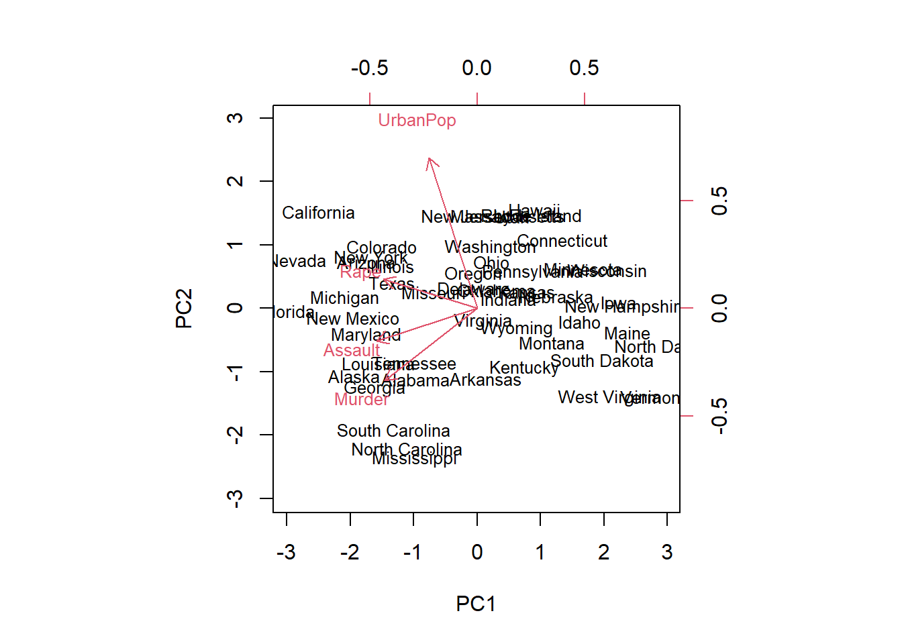
Sin embargo, el biplot base suele ser poco estético y difícil de interpretar cuando hay muchas variables.Con el paquete factoextra podemos personalizarlo un poco más.
fviz_pca_biplot(pca_obj,
repel = TRUE,
col.ind = "gray30",
col.var = "firebrick",
geom.ind = "point",
label = "var",
title = "Bibiplot de componentes principales"
)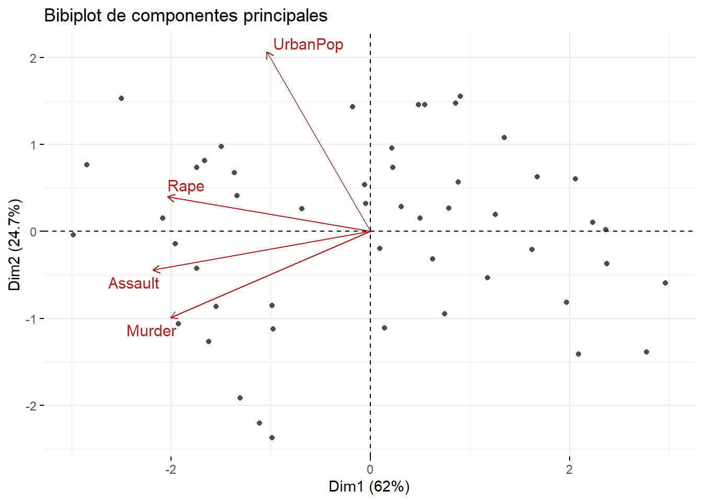
Se puede colorear individuos según un grupo. Vamos a agregar una columna de las regiones.
# Crear variable de grupo por región
region <- state.region # vector ya incluido en R, en el mismo orden de estados
# Hacemos de nuevo el PCA
pca_obj <- prcomp(USArrests, scale. = TRUE)
fviz_pca_biplot(pca_obj,
repel = TRUE,
col.ind = region, # vector con factor o variable categórica
palette = "Dark2",
geom.ind = "point",
addEllipses = TRUE,
title = "Bibiplot coloreado por grupo"
)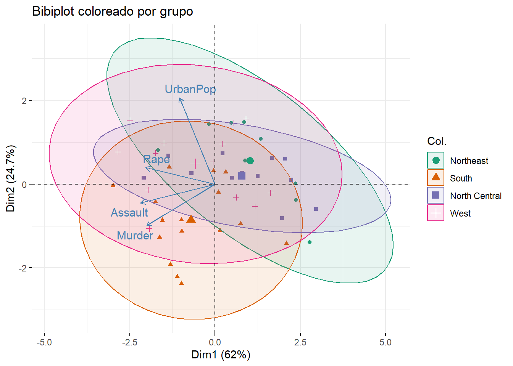
4.0.1 Gráficos adicionales útiles
Además de los gráficos tradicionales del PCA (score plot, loading plot y biplot), existen otras visualizaciones que permiten comprender mejor la importancia y calidad de representación de cada variable en los componentes principales. A continuación se describen tres tipos de gráficos muy utilizados en análisis exploratorio: contribuciones, calidad de representación (\(\cos^2\)) y visualización separada de individuos y variables.
a) Contribuciones por componente: Las contribuciones indican qué porcentaje del total de varianza explicada por un componente proviene de cada variable. Este gráfico permite identificar cuáles variables son las más influyentes en cada componente principal.
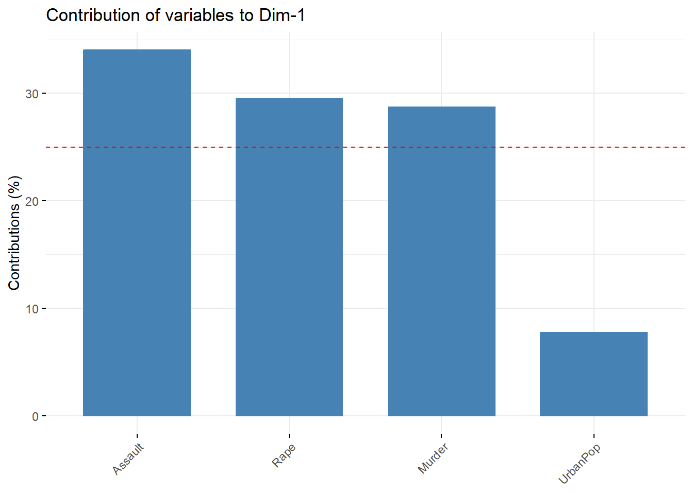
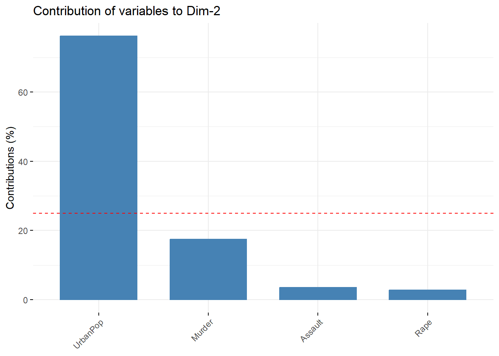
Cómo interpretarlo:
Las barras más altas representan variables que explican mayor parte de la varianza del componente.
Una variable con alta contribución en PC1 influye más en la dirección en que PC1 separa las observaciones.
Si una variable contribuye poco a todos los componentes, tiene poca relevancia estructural para el PCA.
Factoextrasuele marcar con una línea roja la “contribución esperada” si todas las variables aportaran por igual.Barras por arriba de esa línea: variables relevantes.
Barras por abajo: variables menos informativas.
Es un gráfico muy útil para responder preguntas como:
“¿Qué variables están definiendo principalmente el primer componente?”
b) Mapa de calidad de representación (\(\cos^2\)): El valor \(\cos^2\) es la calidad de representación de una variable o individuo en el plano principal (usualmente PC1–PC2). Es decir, indica qué tan bien está proyectada la variable en ese plano.
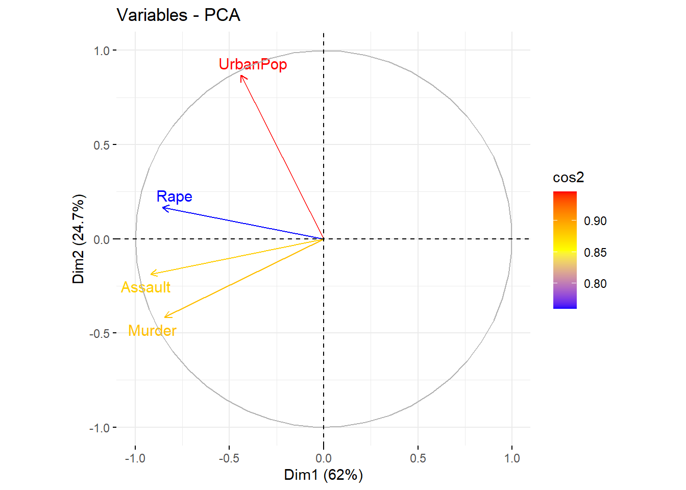
Cómo interpretarlo:
Un valor alto de \(\cos^2\) (cercano a 1) indica que la variable está bien representada en el plano PC1–PC2.
Valores bajos (cercanos a 0) indican que la variable tiene componente importante en PC3, PC4, etc.
El color indica la calidad de representación:
Rojo: excelente representación (\(\cos^2\) alto)
Amarillo: intermedia
Azul: pobre representación
Regla práctica:
Solo interpretar direcciones, ángulos y correlaciones para variables con \(\cos^2\) alto.
Variables con \(\cos^2\) bajo pueden llevar a interpretaciones erróneas.
c) Variables y observaciones en paneles separados: Aunque el biplot combina individuos y variables en una sola figura, a veces es más claro analizarlos por separado:
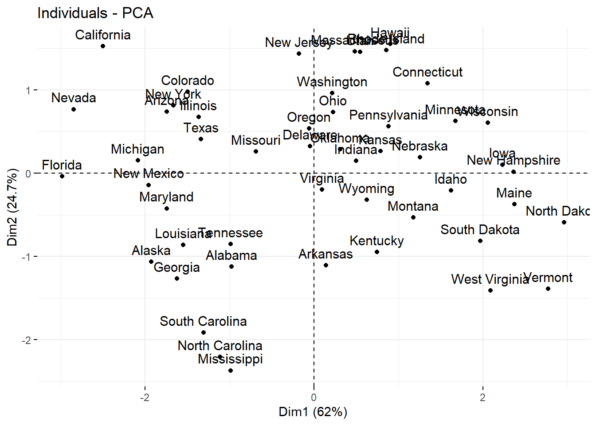
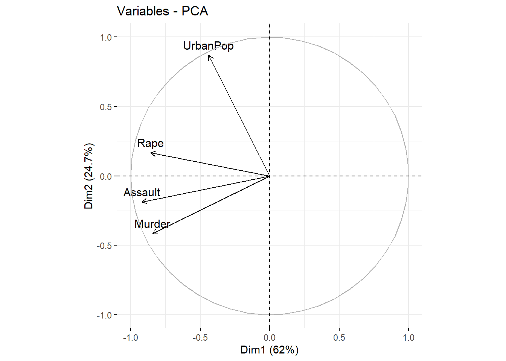
| Gráfico | Es útil para… | Interpretación clave |
|---|---|---|
| Contribuciones | Ver qué variables definen los componentes | Barras grandes = variables muy influyentes |
| \(\cos^2\) | Evaluar calidad de representación | Colores cálidos = buena representación en PC1–PC2 |
| Individuos | Ver similitudes entre observaciones | Puntos cercanos = perfiles similares |
| Variables | Analizar correlaciones y direcciones | Ángulos < 90° = correlación positiva; > 90° = correlación negativa |
4.0.2 Recomendaciones prácticas de interpretación
Usar PC1 y PC2 como primera aproximación, pero revisar también PC3 si la varianza explicada no es alta. Interpretar siempre el biplot considerando:
magnitud y dirección de las flechas,
ángulos entre variables,
ubicación de individuos respecto a las flechas.
Evitar interpretaciones fuertes cuando las \(\cos^2\) sean bajas (mala representación en el plano).
4.1 Ejemplos con Bases de datos
En R existen varios paquetes que nos permiten realizar análisis de componentes principales. Algunas de las funciones son prcomp(), princomp(), PCA().
Los argumentos de la función prcomp() son:
x: una matriz numérica o dataframe.scale: un valor lógico indicando si las variables deberían ser escaladas para tener varianza unitaria antes de realizar el análisis.
Los argumentos de princomp() son los siguientes:
x: una matrix numérica o dataframe.cor: un valor lógico indicando si los datos se centraran y escalaran antes de realizar el análisis.scores: un valor lógico indicando si se calcularan las coordenadas de cada componente principal.
Ambas funciones nos regresan los siguientes valores:
sdev: las desviaciones estándar de las componentes principales.rotation,loadings: la matriz de las cargas donde las columnas son los eigenvectores.center: las medias de las variables, las que fueron restadas.scale: las desviaciones estandar de las variables.x,scores: las coordenadas de las observaciones/individuos de las componentes principales.
Vamos a usar el paquete factoextra para visualizar los resultados.
Ejemplo 1: Vamos a cargar la base de datos siguiente:
## New names:
## • `` -> `...1`## # A tibble: 6 × 8
## ...1 `100m` `200m` `400m` `800m` `1500m` `3000m` Marathon
## <chr> <dbl> <dbl> <dbl> <dbl> <dbl> <dbl> <dbl>
## 1 argentin 11.6 22.9 54.5 2.15 4.43 9.79 179.
## 2 australi 11.2 22.4 51.1 1.98 4.13 9.08 152.
## 3 austria 11.4 23.1 50.6 1.99 4.22 9.34 159.
## 4 belgium 11.4 23.0 52 2 4.14 8.88 158.
## 5 bermuda 11.5 23.0 53.3 2.16 4.58 9.81 170.
## 6 brazil 11.3 23.2 52.8 2.1 4.49 9.77 169.¿Necesitamos escalar los datos? ¿Cómo son las varianzas y covarianzas? ¿Es conveniente trabajar con la matriz de correlación en vez de con la de varianzas y covarianzas?
¿Es apropiado hacer un análisis de componentes principales? ¿por qué? Si lo es, ya que hay muchas correlaciones altas, entonces se podría disminuir la dimensión.
## corrplot 0.95 loadedres1 <- cor.mtest(records2, conf.level= .95)
res2 <- cor.mtest(records2, conf.level= .99)
cor.mat <- cor(records2, use="complete.obs")
corrplot(cor.mat)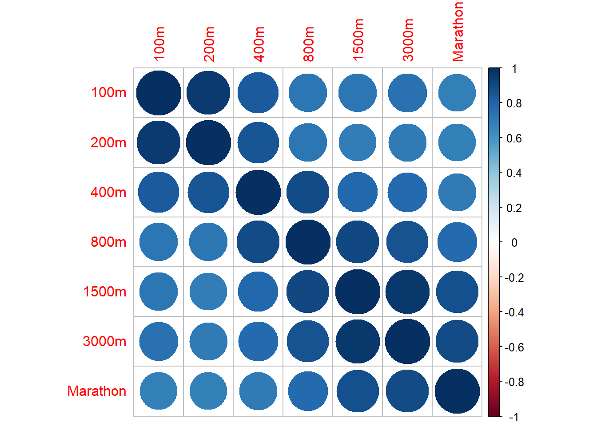
Vamos a calcular los componentes principales primero con la función princomp.
## Importance of components:
## Comp.1 Comp.2 Comp.3 Comp.4 Comp.5
## Standard deviation 2.4094991 0.80848347 0.54761522 0.35422802 0.231984732
## Proportion of Variance 0.8293837 0.09337793 0.04284035 0.01792536 0.007688131
## Cumulative Proportion 0.8293837 0.92276161 0.96560196 0.98352731 0.991215445
## Comp.6 Comp.7
## Standard deviation 0.197608919 0.149808546
## Proportion of Variance 0.005578469 0.003206086
## Cumulative Proportion 0.996793914 1.000000000Con la instrucción loadings lo que obtenemos son las cargas de los componentes principales. Es decir, lo que obtenemos son los coeficientes que se usarán en las combinaciones lineales para calcular cada componente principal. Por ejemplo, para un conjunto de datos \(X_1, X_2,..., X_p\) la primera columna que está denotada por Comp.1 tiene los coeficientes \(\phi_{11}, \phi_{21},... ,\phi_{p1}\) de la combinación lineal con la que se obtiene la primera componente principal:
\[Z_1=\phi_{11}X_1+\phi_{21}X_2+... +\phi_{p1}X_p\]
Esta primera componente principal será la que refleje la mayor variabilidad de los datos. Las cargas son las entradas de cada eigenvector son las siguientes:
##
## Loadings:
## Comp.1 Comp.2 Comp.3 Comp.4 Comp.5 Comp.6 Comp.7
## 100m 0.368 0.490 0.286 0.319 0.231 0.620
## 200m 0.365 0.537 0.230 -0.711 -0.109
## 400m 0.382 0.247 -0.515 -0.347 -0.572 0.191 0.208
## 800m 0.385 -0.155 -0.585 0.620 -0.315
## 1500m 0.389 -0.360 0.430 -0.231 0.693
## 3000m 0.389 -0.348 0.153 0.363 -0.463 -0.598
## Marathon 0.367 -0.369 0.484 -0.672 0.131 0.142
##
## Comp.1 Comp.2 Comp.3 Comp.4 Comp.5 Comp.6 Comp.7
## SS loadings 1.000 1.000 1.000 1.000 1.000 1.000 1.000
## Proportion Var 0.143 0.143 0.143 0.143 0.143 0.143 0.143
## Cumulative Var 0.143 0.286 0.429 0.571 0.714 0.857 1.000Usando estos valores, la fórmula de la primer componente principal se escribiría como:
\[(0.368, 0.365, 0.382,0.385,0.389, 0.389, 0.367)(100m-mean(100m), 200m-mean(200m),...,Marathon-mean(Marathon))\]
Las desviaciones estándar son las raíces de las lambdas.
## Comp.1 Comp.2 Comp.3 Comp.4 Comp.5 Comp.6 Comp.7
## 2.4094991 0.8084835 0.5476152 0.3542280 0.2319847 0.1976089 0.1498085Para calcular la varianza debemos elevar al cuadrado cada una de las entradas.
## Comp.1 Comp.2 Comp.3 Comp.4 Comp.5 Comp.6 Comp.7
## 5.80568576 0.65364552 0.29988243 0.12547749 0.05381692 0.03904928 0.02244260Para obtener la proporción de la varianza que explica cada componente lo que tenemos que hacer es dividir el valor de la varianza de la componente \(j\) entre la suma de las varianzas de todas las componentes.
El siguiente código muestra como realizarlo. Además, en la instrucción summary vemos que estos valores coinciden con los de la segunda fila.
## Comp.1 Comp.2 Comp.3 Comp.4 Comp.5 Comp.6
## 0.829383680 0.093377931 0.042840347 0.017925356 0.007688131 0.005578469
## Comp.7
## 0.003206086Si lo que queremos es el porcentaje, entonces solo hay que multiplicar por 100
## Comp.1 Comp.2 Comp.3 Comp.4 Comp.5 Comp.6 Comp.7
## 82.9383680 9.3377931 4.2840347 1.7925356 0.7688131 0.5578469 0.3206086Para encontrar la proporción de varianza acumulada, lo que tenemos que hacer es dividir la suma de los primeros \(j-\)ésimos eigenvalores entre entre la suma de todos los eigenvalores.
## Comp.1 Comp.2 Comp.3 Comp.4 Comp.5 Comp.6 Comp.7
## 0.8293837 0.9227616 0.9656020 0.9835273 0.9912154 0.9967939 1.0000000Cálculamos los eigenvalores de la matriz cuadrada de correlación.
## eigen() decomposition
## $values
## [1] 5.80568576 0.65364552 0.29988243 0.12547749 0.05381692 0.03904928 0.02244260
##
## $vectors
## [,1] [,2] [,3] [,4] [,5] [,6]
## [1,] -0.3683561 0.4900597 0.28601157 -0.31938631 -0.23116950 -0.619825234
## [2,] -0.3653642 0.5365800 0.22981913 0.08330196 -0.04145457 0.710764580
## [3,] -0.3816103 0.2465377 -0.51536655 0.34737748 0.57217791 -0.190945970
## [4,] -0.3845592 -0.1554023 -0.58452608 0.04207636 -0.62032379 0.019089032
## [5,] -0.3891040 -0.3604093 -0.01291198 -0.42953873 -0.03026144 0.231248381
## [6,] -0.3888661 -0.3475394 0.15272772 -0.36311995 0.46335476 -0.009277159
## [7,] -0.3670038 -0.3692076 0.48437037 0.67249685 -0.13053590 -0.142280558
## [,7]
## [1,] 0.05217655
## [2,] -0.10922503
## [3,] 0.20849691
## [4,] -0.31520972
## [5,] 0.69256151
## [6,] -0.59835943
## [7,] 0.06959828La varianza de las Componentes Principales, es igual a los eigenvalores. Es decir, la desviación estándar de las componentes, es igual a la raíz de los valores propios.
## Comp.1 Comp.2 Comp.3 Comp.4 Comp.5 Comp.6 Comp.7
## 2.4094991 0.8084835 0.5476152 0.3542280 0.2319847 0.1976089 0.1498085## Comp.1 Comp.2 Comp.3 Comp.4 Comp.5 Comp.6 Comp.7
## 2.4 0.8 0.5 0.4 0.2 0.2 0.1## Comp.1 Comp.2 Comp.3 Comp.4 Comp.5 Comp.6 Comp.7
## TRUE TRUE TRUE TRUE TRUE TRUE TRUEPor otra parte, se puede afirmar que la traza de la matriz lambda es igual a la suma de la varianza de cada valor observado.
## [,1] [,2] [,3] [,4] [,5] [,6] [,7]
## [1,] 5.81 0.00 0.0 0.00 0.00 0.00 0.00
## [2,] 0.00 0.65 0.0 0.00 0.00 0.00 0.00
## [3,] 0.00 0.00 0.3 0.00 0.00 0.00 0.00
## [4,] 0.00 0.00 0.0 0.13 0.00 0.00 0.00
## [5,] 0.00 0.00 0.0 0.00 0.05 0.00 0.00
## [6,] 0.00 0.00 0.0 0.00 0.00 0.04 0.00
## [7,] 0.00 0.00 0.0 0.00 0.00 0.00 0.02## [1] 7Además, el porcentaje de la varianza generalizada que es explicado por la componente \(j\)-ésima es igual a la relación que hay entre los eigenvalores divididos por la suma de la diagonal de eigenvalores. Es decir, esto es igual al porcentaje de varianza acumulada por la función summary, y hecho a mano con la suma acumulada de los valores propios.
## [1] 0.8293837 0.9227616 0.9656020 0.9835273 0.9912154 0.9967939 1.0000000Esta matriz es la diagonal con los eigenvalores.
## [,1] [,2] [,3] [,4] [,5] [,6] [,7]
## [1,] 5.81 0.00 0.0 0.00 0.00 0.00 0.00
## [2,] 0.00 0.65 0.0 0.00 0.00 0.00 0.00
## [3,] 0.00 0.00 0.3 0.00 0.00 0.00 0.00
## [4,] 0.00 0.00 0.0 0.13 0.00 0.00 0.00
## [5,] 0.00 0.00 0.0 0.00 0.05 0.00 0.00
## [6,] 0.00 0.00 0.0 0.00 0.00 0.04 0.00
## [7,] 0.00 0.00 0.0 0.00 0.00 0.00 0.02La traza de la matriz \(\Lambda\) es igual a la suma de las varianzas acumuladas por los Componentes.
## [1] 7Una forma de ver con cuantos componentes nos conviene trabajar es con el gráfico de codo.
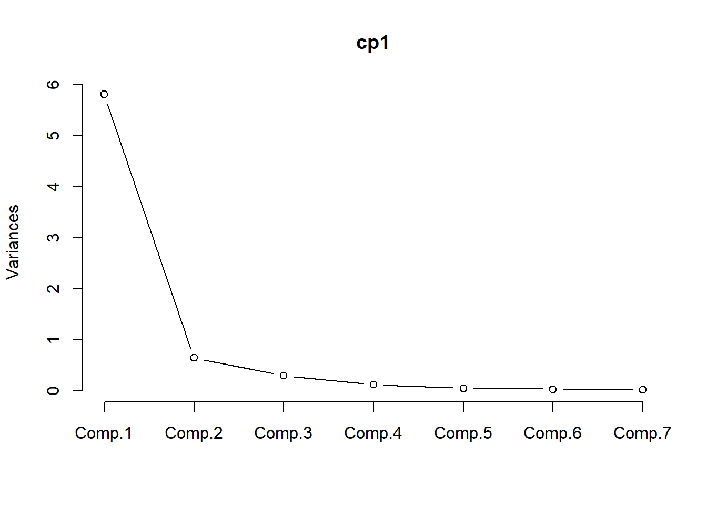
¿Con cuántas componentes nos conviene quedarnos?
El biplot es una forma de representar los resultados de PCA.
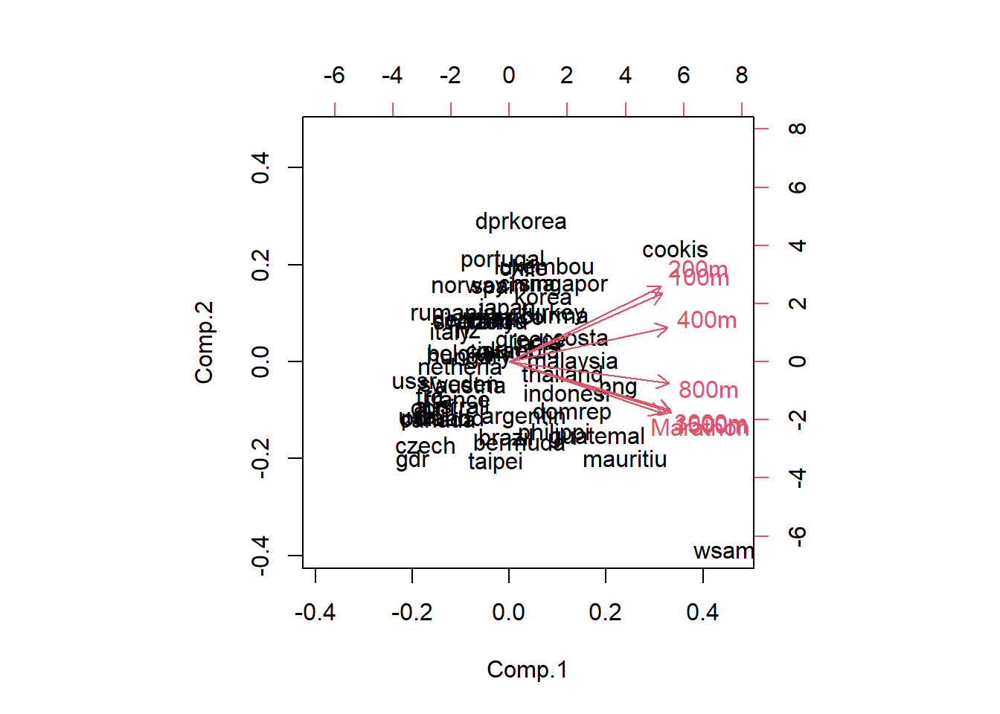
Vamos a analizar el biplot a detalle.
¿Qué mide la primera componente? o ¿Cómo la interpretas?
La interpretación no se hace en función delos individuos sino de las variables que explica cada componente. Como en esta primer componente, todas las cargas son positivas y muy similares para todas las variables, podríamos nombrar a esta variable “velocidad en las carreras” por ejemplo.
En el biplot, los países que quedan a la derecha del cero, ¿qué tipo de corredores tienen? Los lentos.
En el biplot, los países que quedan con puntajes altos en la segunda componente, tienen velocistas rápidos y fondistas lentos o viceversa?
Los pesos positivos están en las carreras de velocidad y los pesos negativos en las de fondo. Es decir, un país con valores altos (tiempos grandes) en las carreras X100, X200, X400, tendrá valores positivos y grandes al multiplicar por las cargas de componente 2, y sí tiene tiempos bajos en las carreras de fondo, al multiplicar por las cargas negativas de la componente 2, el score para ese país en el componente 2 será positivo. Caso contrario pasaría con un país con tiempos cortos en las carreras de 100 a 200 m, y tiempos largos en las carreras de fondo.
¿En qué cuadrante se encuentran los países que tienen a los velocistas más rápidos? Sería III, pues es el cuadrante opuesto a la dirección de los vectores de las variables X100, X200, X400 ( cuadrante I, en donde se ubican los velocistas más lentos).
¿En qué cuadrante se encuentran los países que tienen a los fondistas más rápidos? Sería el cuadrante II, opuesto a la dirección de los vectores de marathon, X800, X1500 (ubicados en cuadrante IV, en donde están los fondistas mas lentos).
¿Qué país tiene los velocistas más lentos? Sí observas el biplot CP1 vs CP2, Cookis está hacia donde están apuntando los vectores positivos de las carreras de velocidad, lo cual quiere decir que ese país tiene tiempos largos en esas carreras de velocidad y en consecuencia, su score en componente 2 resulta muy positiva.
¿Qué país tiene los fondistas más lentos?
Sí observas el biplot CP1 vs CP2, wsamoa está hacia donde están apuntando los vectores de las carreras de fondo (X800, X1500, Xmarathon), lo cual quiere decir que ese país tiene tiempos largos en esas carreras de fondo y en consecuencia, su score en componente 2 resulta muy negativa.
Ejemplo 2: Vamos a cargar la base de datos decathlon2 del paquete factoextra y vamos a extraer los individuos del 1:23 y las variables 1:10.
## X100m Long.jump Shot.put High.jump X400m X110m.hurdle
## SEBRLE 11.04 7.58 14.83 2.07 49.81 14.69
## CLAY 10.76 7.40 14.26 1.86 49.37 14.05
## BERNARD 11.02 7.23 14.25 1.92 48.93 14.99
## YURKOV 11.34 7.09 15.19 2.10 50.42 15.31
## ZSIVOCZKY 11.13 7.30 13.48 2.01 48.62 14.17
## McMULLEN 10.83 7.31 13.76 2.13 49.91 14.38¿Necesitamos escalar los datos? ¿Cómo son las varianzas y covarianzas?
Vamos a calcular la matriz de correlaciones.
library(corrplot)
res1 <- cor.mtest(decathlon2_activos, conf.level= .95)
res2 <- cor.mtest(decathlon2_activos, conf.level= .99)
cor.mat <- cor(decathlon2_activos, use="complete.obs")
corrplot(cor.mat)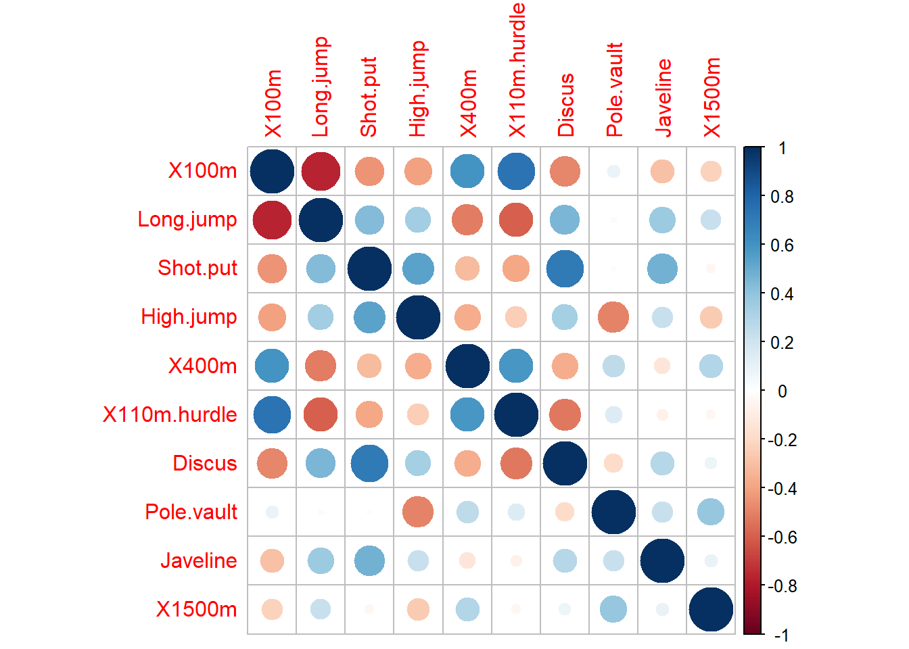
Removemos algunas de las variables correlacionadas.
## ── Attaching core tidyverse packages ──────────────────────── tidyverse 2.0.0 ──
## ✔ dplyr 1.1.4 ✔ readr 2.1.5
## ✔ forcats 1.0.0 ✔ stringr 1.5.1
## ✔ lubridate 1.9.4 ✔ tibble 3.3.0
## ✔ purrr 1.1.0 ✔ tidyr 1.3.1
## ── Conflicts ────────────────────────────────────────── tidyverse_conflicts() ──
## ✖ psych::%+%() masks ggplot2::%+%()
## ✖ psych::alpha() masks ggplot2::alpha()
## ✖ dplyr::filter() masks stats::filter()
## ✖ dplyr::lag() masks stats::lag()
## ℹ Use the conflicted package (<http://conflicted.r-lib.org/>) to force all conflicts to become errors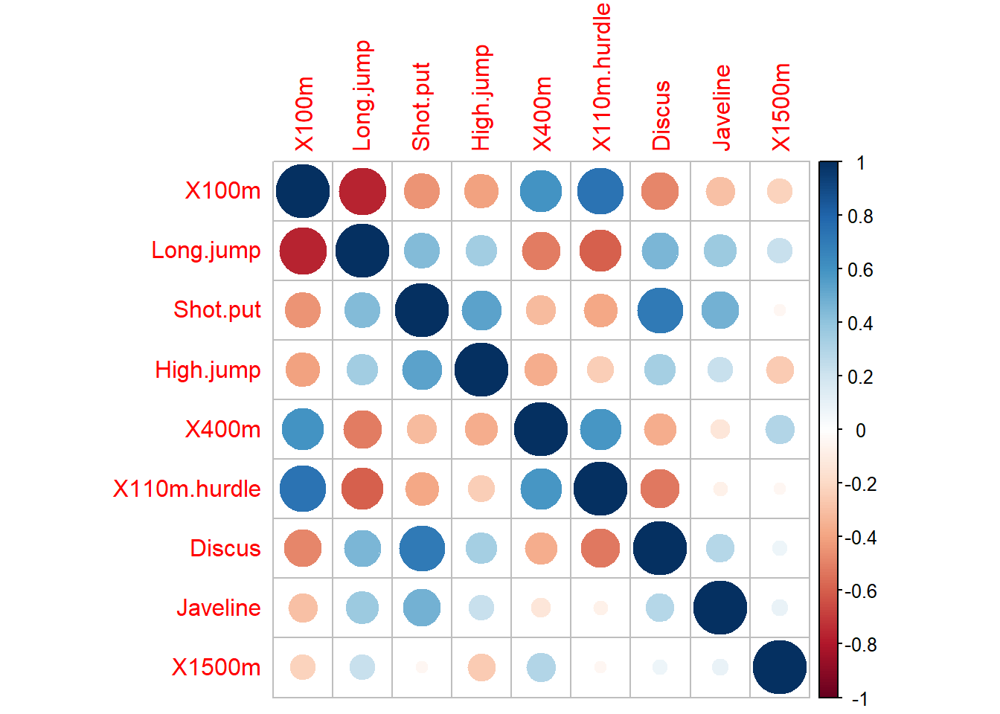
Usaremos la función prcomp() y primero realizaremos el análisis sin quitar la variable anterior.
Visualizamos lo eigenvalores.
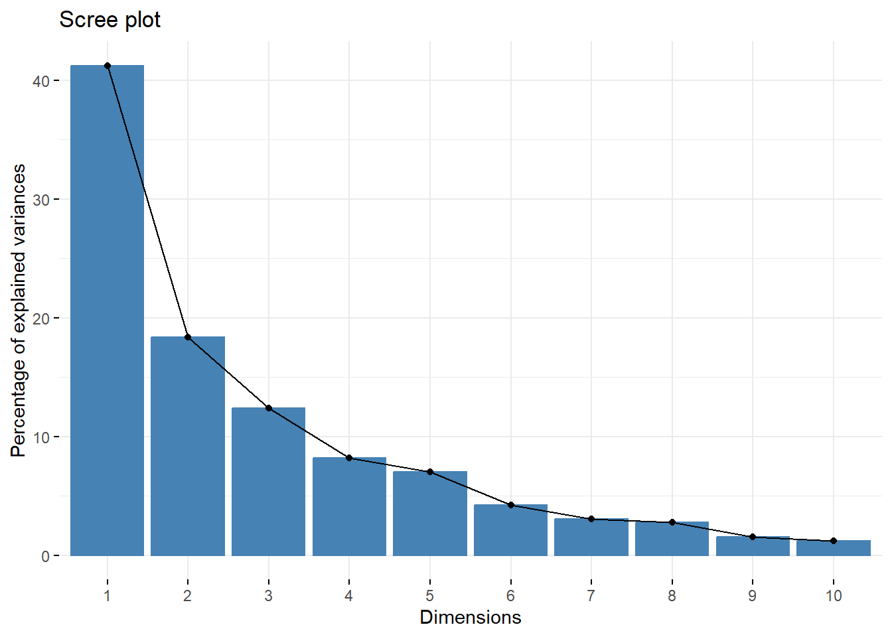
## Importance of components:
## PC1 PC2 PC3 PC4 PC5 PC6 PC7
## Standard deviation 2.0308 1.3559 1.1132 0.90523 0.83759 0.65029 0.55007
## Proportion of Variance 0.4124 0.1839 0.1239 0.08194 0.07016 0.04229 0.03026
## Cumulative Proportion 0.4124 0.5963 0.7202 0.80213 0.87229 0.91458 0.94483
## PC8 PC9 PC10
## Standard deviation 0.52390 0.39398 0.3492
## Proportion of Variance 0.02745 0.01552 0.0122
## Cumulative Proportion 0.97228 0.98780 1.0000¿Cuál es la proporción de la varianza explicada de las componentes?
¿Con cuántas componentes nos conviene quedarnos? ¿Porqué?
Vamos a graficar a los individuos y corolearlos por perfiles similares.
fviz_pca_ind(res.pca,
col.ind = "cos2", # color por la calidad de representación
gradient.cols = c("#00AFBB", "#E7B800", "#FC4E07"),
repel = TRUE # evitar que se sobrelape el texto
)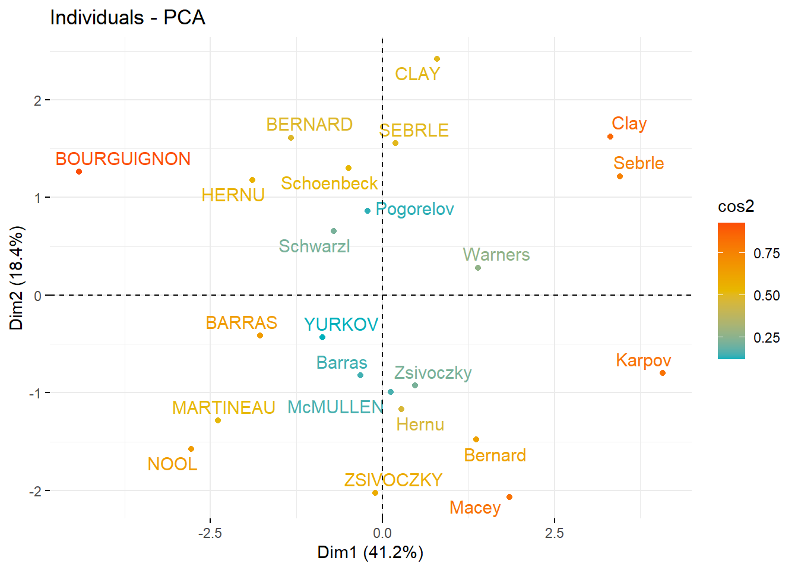
Para graficar las variables y ver sus correlaciones realizamos lo siguiente. Variables correlacionadas negativamente apuntan a lados opuestos.
fviz_pca_var(res.pca,
col.var = "contrib", # Color por contribución al PCA
gradient.cols = c("#00AFBB", "#E7B800", "#FC4E07"),
repel = TRUE
)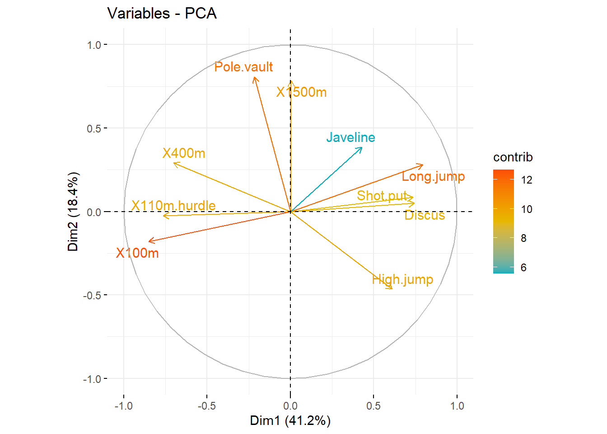
Un objeto importante en estos análisis de PCA son los biplots.
fviz_pca_biplot(res.pca, repel = TRUE,
col.var = "#2E9FDF", # Variables
col.ind = "#696969" # Individuos
)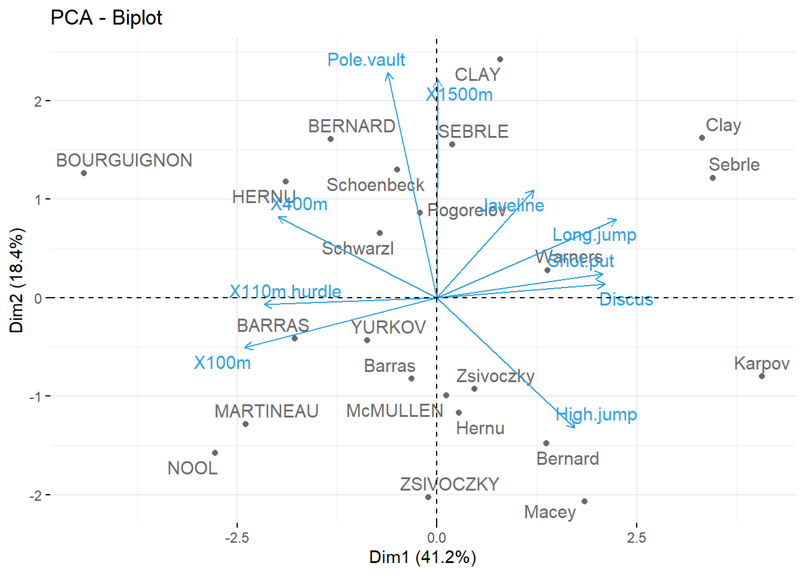
fviz_pca_biplot(res.pca, repel = TRUE, axes = c(1,3),
col.var = "#2E9FDF", # Variables
col.ind = "#696969" # Individuos
)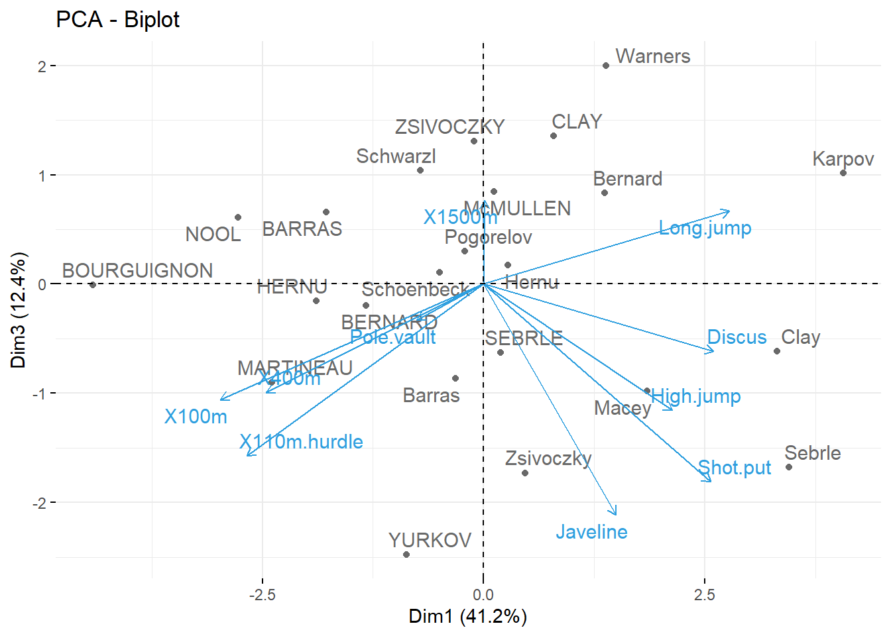
Vamos a acceder a los resultados del PCA.
## eigenvalue variance.percent cumulative.variance.percent
## Dim.1 4.1242133 41.242133 41.24213
## Dim.2 1.8385309 18.385309 59.62744
## Dim.3 1.2391403 12.391403 72.01885
## Dim.4 0.8194402 8.194402 80.21325
## Dim.5 0.7015528 7.015528 87.22878
## Dim.6 0.4228828 4.228828 91.45760
## Dim.7 0.3025817 3.025817 94.48342
## Dim.8 0.2744700 2.744700 97.22812
## Dim.9 0.1552169 1.552169 98.78029
## Dim.10 0.1219710 1.219710 100.00000## Dim.1 Dim.2 Dim.3 Dim.4 Dim.5
## X100m -0.850625692 -0.17939806 -0.30155643 0.03357320 -0.1944440
## Long.jump 0.794180641 0.28085695 0.19054653 -0.11538956 0.2331567
## Shot.put 0.733912733 0.08540412 -0.51759781 0.12846837 -0.2488129
## High.jump 0.610083985 -0.46521415 -0.33008517 0.14455012 0.4027002
## X400m -0.701603377 0.29017826 -0.28353292 0.43082552 0.1039085
## X110m.hurdle -0.764125197 -0.02474081 -0.44888733 -0.01689589 0.2242200
## Discus 0.743209016 0.04966086 -0.17652518 0.39500915 -0.4082391
## Pole.vault -0.217268042 0.80745110 -0.09405773 -0.33898477 -0.2216853
## Javeline 0.428226639 0.38610928 -0.60412432 -0.33173454 0.1978128
## X1500m 0.004278487 0.78448019 0.21947068 0.44800961 0.2632527
## Dim.6 Dim.7 Dim.8 Dim.9 Dim.10
## X100m -0.035374780 -0.091336386 -0.104716925 -0.30306448 0.044417974
## Long.jump 0.033727883 -0.154330810 -0.397380703 -0.05158951 0.029719453
## Shot.put 0.239789034 -0.009886612 0.024359049 0.04778655 0.217451948
## High.jump 0.284644846 0.028157465 0.084405578 -0.11213822 -0.133566774
## X400m 0.049289996 0.286106008 -0.233552216 0.08216041 -0.034170673
## X110m.hurdle -0.002632395 -0.370072158 -0.008344682 0.16176025 -0.015629914
## Discus -0.198544870 -0.142725641 -0.039559255 0.01336209 -0.172590426
## Pole.vault 0.327464549 -0.010393176 0.032914942 -0.02576874 -0.137211339
## Javeline -0.362097598 0.133564318 0.052841099 -0.04045397 -0.003854347
## X1500m -0.042050151 -0.111367083 0.194469730 -0.10224014 0.062834809## Dim.1 Dim.2 Dim.3 Dim.4 Dim.5
## X100m 1.754429e+01 1.7505098 7.3386590 0.13755240 5.389252
## Long.jump 1.529317e+01 4.2904162 2.9300944 1.62485936 7.748815
## Shot.put 1.306014e+01 0.3967224 21.6204325 2.01407269 8.824401
## High.jump 9.024811e+00 11.7715838 8.7928883 2.54987951 23.115504
## X400m 1.193554e+01 4.5799296 6.4876363 22.65090599 1.539012
## X110m.hurdle 1.415754e+01 0.0332933 16.2612611 0.03483735 7.166193
## Discus 1.339309e+01 0.1341398 2.5147385 19.04132022 23.755756
## Pole.vault 1.144592e+00 35.4618611 0.7139512 14.02307063 7.005084
## Javeline 4.446377e+00 8.1086683 29.4531777 13.42963254 5.577615
## X1500m 4.438531e-04 33.4728757 3.8871610 24.49386930 9.878367
## Dim.6 Dim.7 Dim.8 Dim.9 Dim.10
## X100m 0.295915322 2.75705260 3.99520353 59.1740009 1.61756139
## Long.jump 0.269003613 7.87159392 57.53322220 1.7146826 0.72414393
## Shot.put 13.596858744 0.03230371 0.21618512 1.4712015 38.76768578
## High.jump 19.159607001 0.26202607 2.59565787 8.1015517 14.62649091
## X400m 0.574509906 27.05274658 19.87344405 4.3489667 0.95730504
## X110m.hurdle 0.001638634 45.26163460 0.02537025 16.8579392 0.20028870
## Discus 9.321746508 6.73226823 0.57016606 0.1150295 24.42174410
## Pole.vault 25.357622290 0.03569883 0.39472201 0.4278065 15.43559151
## Javeline 31.004964393 5.89573984 1.01729950 1.0543458 0.01217993
## X1500m 0.418133591 4.09893563 13.77872941 6.7344755 3.23700871## Dim.1 Dim.2 Dim.3 Dim.4 Dim.5
## X100m 7.235641e-01 0.0321836641 0.090936280 0.0011271597 0.03780845
## Long.jump 6.307229e-01 0.0788806285 0.036307981 0.0133147506 0.05436203
## Shot.put 5.386279e-01 0.0072938636 0.267907488 0.0165041211 0.06190783
## High.jump 3.722025e-01 0.2164242070 0.108956221 0.0208947375 0.16216747
## X400m 4.922473e-01 0.0842034209 0.080390914 0.1856106269 0.01079698
## X110m.hurdle 5.838873e-01 0.0006121077 0.201499837 0.0002854712 0.05027463
## Discus 5.523596e-01 0.0024662013 0.031161138 0.1560322304 0.16665918
## Pole.vault 4.720540e-02 0.6519772763 0.008846856 0.1149106765 0.04914437
## Javeline 1.833781e-01 0.1490803723 0.364966189 0.1100478063 0.03912992
## X1500m 1.830545e-05 0.6154091638 0.048167378 0.2007126089 0.06930197
## Dim.6 Dim.7 Dim.8 Dim.9 Dim.10
## X100m 1.251375e-03 0.0083423353 1.096563e-02 0.0918480768 1.972956e-03
## Long.jump 1.137570e-03 0.0238179990 1.579114e-01 0.0026614779 8.832459e-04
## Shot.put 5.749878e-02 0.0000977451 5.933633e-04 0.0022835540 4.728535e-02
## High.jump 8.102269e-02 0.0007928428 7.124302e-03 0.0125749811 1.784008e-02
## X400m 2.429504e-03 0.0818566479 5.454664e-02 0.0067503333 1.167635e-03
## X110m.hurdle 6.929502e-06 0.1369534023 6.963371e-05 0.0261663784 2.442942e-04
## Discus 3.942007e-02 0.0203706085 1.564935e-03 0.0001785453 2.978746e-02
## Pole.vault 1.072330e-01 0.0001080181 1.083393e-03 0.0006640282 1.882695e-02
## Javeline 1.311147e-01 0.0178394271 2.792182e-03 0.0016365234 1.485599e-05
## X1500m 1.768215e-03 0.0124026272 3.781848e-02 0.0104530472 3.948213e-03## Dim.1 Dim.2 Dim.3 Dim.4 Dim.5
## SEBRLE 0.1912074 1.5541282 -0.62836882 0.08205241 1.1426139415
## CLAY 0.7901217 2.4204156 1.35688701 1.26984296 -0.8068483724
## BERNARD -1.3292592 1.6118687 -0.19614996 -1.92092203 0.0823428202
## YURKOV -0.8694134 -0.4328779 -2.47398223 0.69723814 0.3988584116
## ZSIVOCZKY -0.1057450 -2.0233632 1.30493117 -0.09929630 -0.1970241089
## McMULLEN 0.1185550 -0.9916237 0.84355824 1.31215266 1.5858708644
## MARTINEAU -2.3923532 -1.2849234 -0.89816842 0.37309771 -2.2433515889
## HERNU -1.8910497 1.1784614 -0.15641037 0.89130068 -0.1267412520
## BARRAS -1.7744575 -0.4125321 0.65817750 0.22872866 -0.2338366980
## NOOL -2.7770058 -1.5726757 0.60724821 -1.55548081 1.4241839810
## BOURGUIGNON -4.4137335 1.2635770 -0.01003734 0.66675478 0.4191518468
## Sebrle 3.4514485 1.2169193 -1.67816711 -0.80870696 -0.0250530746
## Clay 3.3162243 1.6232908 -0.61840443 -0.31679906 0.5691645854
## Karpov 4.0703560 -0.7983510 1.01501662 0.31336354 -0.7974259553
## Macey 1.8484623 -2.0638828 -0.97928455 0.58469073 -0.0002157834
## Warners 1.3873514 0.2819083 1.99969621 -1.01959817 -0.0405401497
## Zsivoczky 0.4715533 -0.9267436 -1.72815525 -0.18483138 0.4073029909
## Hernu 0.2763118 -1.1657260 0.17056375 -0.84869401 -0.6894795441
## Bernard 1.3672590 -1.4780354 0.83137913 0.74531557 0.8598016482
## Schwarzl -0.7102777 0.6584251 1.04075176 -0.92717510 -0.2887568007
## Pogorelov -0.2143524 0.8610557 0.29761010 1.35560294 -0.0150531057
## Schoenbeck -0.4953166 1.3000530 0.10300360 -0.24927712 -0.6452257128
## Barras -0.3158867 -0.8193681 -0.86169481 -0.58935985 -0.7797389436
## Dim.6 Dim.7 Dim.8 Dim.9 Dim.10
## SEBRLE 0.46389755 -0.20796012 0.043460568 -0.659344137 0.03273238
## CLAY -1.30420016 -0.21291866 0.617240611 -0.060125359 -0.31716015
## BERNARD 0.40062867 -0.40643754 0.703856040 0.170083313 -0.09908142
## YURKOV -0.10286344 -0.32487448 0.114996135 -0.109524039 -0.11969720
## ZSIVOCZKY -0.89554111 0.08825624 -0.202341299 -0.523103099 -0.34842265
## McMULLEN -0.18657283 0.47828432 0.293089967 -0.105623196 -0.39317797
## MARTINEAU 0.45666350 -0.29975522 -0.291628488 -0.223417655 -0.61640509
## HERNU -0.43623496 -0.56609980 -1.529404317 0.006184409 0.55368016
## BARRAS -0.09026010 0.21594095 0.682583078 -0.669282042 0.53085420
## NOOL -0.49716399 -0.53205687 -0.433385655 -0.115777808 -0.09622142
## BOURGUIGNON 0.08200220 -0.59833739 0.563619921 0.525814030 0.05855882
## Sebrle 0.08279306 0.01016177 -0.030585843 -0.847210682 0.21970353
## Clay -0.77715960 0.25750851 -0.580638301 0.409776590 -0.61601933
## Karpov 0.32958134 -1.36365568 0.345306381 0.193055107 0.21721852
## Macey 0.19728082 -0.26927772 -0.363219506 0.368260269 0.21249474
## Warners 0.55673300 -0.26739400 -0.109470797 0.180283071 0.24208420
## Zsivoczky 0.11383190 0.03991159 0.538039776 0.585966156 -0.14271715
## Hernu 0.33168404 0.44308686 0.247293566 0.066908586 -0.20868256
## Bernard 0.32806564 0.36357920 0.006165316 0.279488675 0.32067773
## Schwarzl 0.68891640 0.56568604 -0.687053339 -0.008358849 -0.30211546
## Pogorelov 1.59379599 0.78370119 -0.037623661 -0.130531397 -0.03697576
## Schoenbeck -0.16172381 0.85752368 -0.255850722 0.564222295 0.29680481
## Barras -1.17415412 0.94512710 0.365550568 0.102255763 0.61186706## Dim.1 Dim.2 Dim.3 Dim.4 Dim.5
## SEBRLE 0.03854254 5.7118249 1.385418e+00 0.03572215 8.091161e+00
## CLAY 0.65814114 13.8541889 6.460097e+00 8.55568792 4.034555e+00
## BERNARD 1.86273218 6.1441319 1.349983e-01 19.57827284 4.202070e-02
## YURKOV 0.79686310 0.4431309 2.147558e+01 2.57939100 9.859373e-01
## ZSIVOCZKY 0.01178829 9.6816398 5.974848e+00 0.05231437 2.405750e-01
## McMULLEN 0.01481737 2.3253860 2.496789e+00 9.13531719 1.558646e+01
## MARTINEAU 6.03367104 3.9044125 2.830527e+00 0.73858431 3.118936e+01
## HERNU 3.76996156 3.2842176 8.583863e-02 4.21505626 9.955149e-02
## BARRAS 3.31942012 0.4024544 1.519980e+00 0.27758505 3.388731e-01
## NOOL 8.12988880 5.8489726 1.293851e+00 12.83761115 1.257025e+01
## BOURGUIGNON 20.53729577 3.7757623 3.534995e-04 2.35877858 1.088816e+00
## Sebrle 12.55838616 3.5020697 9.881482e+00 3.47006223 3.889859e-03
## Clay 11.59361384 6.2315181 1.341828e+00 0.53250375 2.007648e+00
## Karpov 17.46609555 1.5072627 3.614914e+00 0.52101693 3.940874e+00
## Macey 3.60207087 10.0732890 3.364879e+00 1.81387486 2.885677e-07
## Warners 2.02910262 0.1879390 1.403071e+01 5.51585696 1.018550e-02
## Zsivoczky 0.23441891 2.0310492 1.047894e+01 0.18126182 1.028128e+00
## Hernu 0.08048777 3.2136178 1.020764e-01 3.82170515 2.946148e+00
## Bernard 1.97075488 5.1661961 2.425213e+00 2.94737426 4.581507e+00
## Schwarzl 0.53184785 1.0252129 3.800546e+00 4.56119277 5.167449e-01
## Pogorelov 0.04843819 1.7533304 3.107757e-01 9.75034337 1.404313e-03
## Schoenbeck 0.25864068 3.9969003 3.722687e-02 0.32970059 2.580092e+00
## Barras 0.10519467 1.5876667 2.605305e+00 1.84296038 3.767994e+00
## Dim.6 Dim.7 Dim.8 Dim.9 Dim.10
## SEBRLE 2.21256620 0.621426384 2.992045e-02 12.177477305 0.03819185
## CLAY 17.48801877 0.651413899 6.035125e+00 0.101262442 3.58568943
## BERNARD 1.65019840 2.373652810 7.847747e+00 0.810319793 0.34994507
## YURKOV 0.10878629 1.516564073 2.094806e-01 0.336009790 0.51072064
## ZSIVOCZKY 8.24561722 0.111923276 6.485544e-01 7.664919832 4.32741147
## McMULLEN 0.35788945 3.287016354 1.360753e+00 0.312501167 5.51053518
## MARTINEAU 2.14409841 1.291109482 1.347216e+00 1.398195851 13.54402896
## HERNU 1.95655942 4.604850849 3.705288e+01 0.001071345 10.92781554
## BARRAS 0.08376135 0.670038259 7.380544e+00 12.547331617 10.04537028
## NOOL 2.54127369 4.067669683 2.975270e+00 0.375477289 0.33003418
## BOURGUIGNON 0.06913582 5.144247534 5.032108e+00 7.744571086 0.12223626
## Sebrle 0.07047579 0.001483775 1.481898e-02 20.105546253 1.72063803
## Clay 6.20972751 0.952824148 5.340583e+00 4.703566841 13.52708188
## Karpov 1.11680500 26.720158115 1.888802e+00 1.043988269 1.68193477
## Macey 0.40014909 1.041910483 2.089853e+00 3.798767930 1.60957713
## Warners 3.18673563 1.027384225 1.898339e-01 0.910422384 2.08904756
## Zsivoczky 0.13322327 0.022889042 4.585705e+00 9.617852173 0.72605208
## Hernu 1.13110069 2.821027418 9.687304e-01 0.125399768 1.55234328
## Bernard 1.10655655 1.899449022 6.021268e-04 2.188071254 3.66566729
## Schwarzl 4.87961053 4.598122119 7.477531e+00 0.001957159 3.25357879
## Pogorelov 26.11665608 8.825322559 2.242329e-02 0.477268755 0.04873597
## Schoenbeck 0.26890572 10.566272800 1.036933e+00 8.917302863 3.14020004
## Barras 14.17432302 12.835417603 2.116763e+00 0.292892746 13.34533825## Dim.1 Dim.2 Dim.3 Dim.4 Dim.5
## SEBRLE 0.007530179 0.49747323 8.132523e-02 0.001386688 2.689027e-01
## CLAY 0.048701249 0.45701660 1.436281e-01 0.125791741 5.078506e-02
## BERNARD 0.197199804 0.28996555 4.294015e-03 0.411819183 7.567259e-04
## YURKOV 0.096109800 0.02382571 7.782303e-01 0.061812637 2.022798e-02
## ZSIVOCZKY 0.001574385 0.57641944 2.397542e-01 0.001388216 5.465497e-03
## McMULLEN 0.002175437 0.15219499 1.101379e-01 0.266486530 3.892621e-01
## MARTINEAU 0.404013915 0.11654676 5.694575e-02 0.009826320 3.552552e-01
## HERNU 0.399282749 0.15506199 2.731529e-03 0.088699901 1.793538e-03
## BARRAS 0.616241975 0.03330700 8.478249e-02 0.010239088 1.070152e-02
## NOOL 0.489872515 0.15711146 2.342405e-02 0.153694675 1.288433e-01
## BOURGUIGNON 0.859698130 0.07045912 4.446015e-06 0.019618511 7.753120e-03
## Sebrle 0.675380606 0.08395940 1.596674e-01 0.037079012 3.558507e-05
## Clay 0.687592867 0.16475409 2.391051e-02 0.006274965 2.025440e-02
## Karpov 0.783666922 0.03014772 4.873187e-02 0.004644764 3.007790e-02
## Macey 0.363436037 0.45308203 1.020057e-01 0.036362957 4.952707e-09
## Warners 0.255651956 0.01055582 5.311341e-01 0.138081100 2.182965e-04
## Zsivoczky 0.045053176 0.17401353 6.051030e-01 0.006921739 3.361236e-02
## Hernu 0.024824321 0.44184663 9.459148e-03 0.234196727 1.545686e-01
## Bernard 0.289347476 0.33813318 1.069834e-01 0.085980212 1.144234e-01
## Schwarzl 0.116721435 0.10030142 2.506043e-01 0.198892209 1.929118e-02
## Pogorelov 0.007803472 0.12591966 1.504272e-02 0.312101619 3.848427e-05
## Schoenbeck 0.067070098 0.46204603 2.900467e-03 0.016987442 1.138116e-01
## Barras 0.018972684 0.12765099 1.411800e-01 0.066043061 1.156018e-01
## Dim.6 Dim.7 Dim.8 Dim.9 Dim.10
## SEBRLE 0.0443241299 8.907507e-03 3.890334e-04 8.954067e-02 0.0002206741
## CLAY 0.1326907339 3.536548e-03 2.972084e-02 2.820119e-04 0.0078471026
## BERNARD 0.0179131165 1.843634e-02 5.529104e-02 3.228572e-03 0.0010956493
## YURKOV 0.0013453555 1.341980e-02 1.681440e-03 1.525225e-03 0.0018217256
## ZSIVOCZKY 0.1129176906 1.096685e-03 5.764478e-03 3.852703e-02 0.0170924251
## McMULLEN 0.0053876990 3.540616e-02 1.329562e-02 1.726733e-03 0.0239268142
## MARTINEAU 0.0147210347 6.342774e-03 6.003515e-03 3.523552e-03 0.0268211980
## HERNU 0.0212478795 3.578167e-02 2.611676e-01 4.270425e-06 0.0342288717
## BARRAS 0.0015944528 9.126203e-03 9.118662e-02 8.766746e-02 0.0551531863
## NOOL 0.0157010551 1.798232e-02 1.193105e-02 8.514912e-04 0.0005881295
## BOURGUIGNON 0.0002967459 1.579887e-02 1.401866e-02 1.220108e-02 0.0001513277
## Sebrle 0.0003886276 5.854423e-06 5.303795e-05 4.069384e-02 0.0027366539
## Clay 0.0377627839 4.145976e-03 2.107924e-02 1.049876e-02 0.0237264222
## Karpov 0.0051379747 8.795817e-02 5.639959e-03 1.762907e-03 0.0022318265
## Macey 0.0041397727 7.712721e-03 1.403282e-02 1.442502e-02 0.0048028954
## Warners 0.0411689767 9.496848e-03 1.591742e-03 4.317040e-03 0.0077841113
## Zsivoczky 0.0026253777 3.227467e-04 5.865332e-02 6.956790e-02 0.0041268259
## Hernu 0.0357707217 6.383462e-02 1.988402e-02 1.455601e-03 0.0141595965
## Bernard 0.0166586433 2.046050e-02 5.883405e-06 1.209056e-02 0.0159167991
## Schwarzl 0.1098063093 7.403638e-02 1.092132e-01 1.616543e-05 0.0211173850
## Pogorelov 0.4314162233 1.043115e-01 2.404103e-04 2.893750e-03 0.0002322016
## Schoenbeck 0.0071500829 2.010275e-01 1.789520e-02 8.702893e-02 0.0240826922
## Barras 0.2621297474 1.698426e-01 2.540745e-02 1.988116e-03 0.0711836486El conjunto de datos tiene unas variables categóricas en la columna 13 que se quitó al inicio que corresponde al tipo de competición. Vamos a usar esa variable para agrupar los individuos.
groups <- as.factor(decathlon2$Competition[1:23])
fviz_pca_ind(res.pca,
col.ind = groups, # color by groups
palette = c("#00AFBB", "#FC4E07"),
addEllipses = TRUE, # Concentration ellipses
ellipse.level=0.7,
legend.title = "Groups",
repel = TRUE
)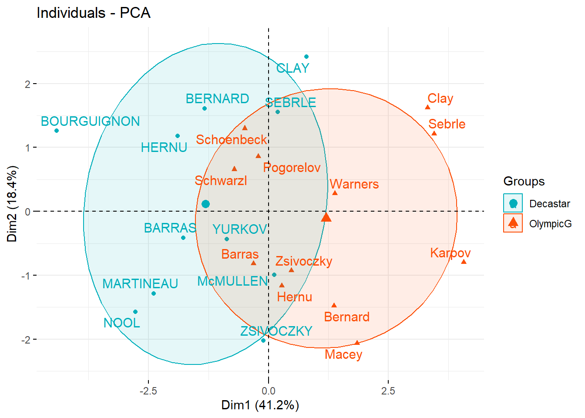
Explica las componentes. ¿Cómo podrías llamar a las componentes 1 y 2?
4.2 Ejercicios PCA
Ejercicio 1: Carga la base de datos siguiente y realiza el análisis de componentes principales. Decide y justifica que matriz usaras, la de varianzas y covarianzas o la de correlaciones. ¿Con cuántas componentes te quedarías? ¿por qué? ¿Qué explica cada componente de las que te quedaste? ¿Cuál es la varianza total explicada por esas componentes? ¿Qué tortuga es la más grande? ¿Qué variable tiene la mayor varianza? ¿Las variables están correlacionadas positivamente? ¿Porqué?
library(readr)
turtledata <- read_delim("data/turtledata.csv",
delim = ";", escape_double = FALSE, trim_ws = TRUE)## Rows: 48 Columns: 4
## ── Column specification ────────────────────────────────────────────────────────
## Delimiter: ";"
## dbl (4): length, width, height, female
##
## ℹ Use `spec()` to retrieve the full column specification for this data.
## ℹ Specify the column types or set `show_col_types = FALSE` to quiet this message.Ejercicio 2: